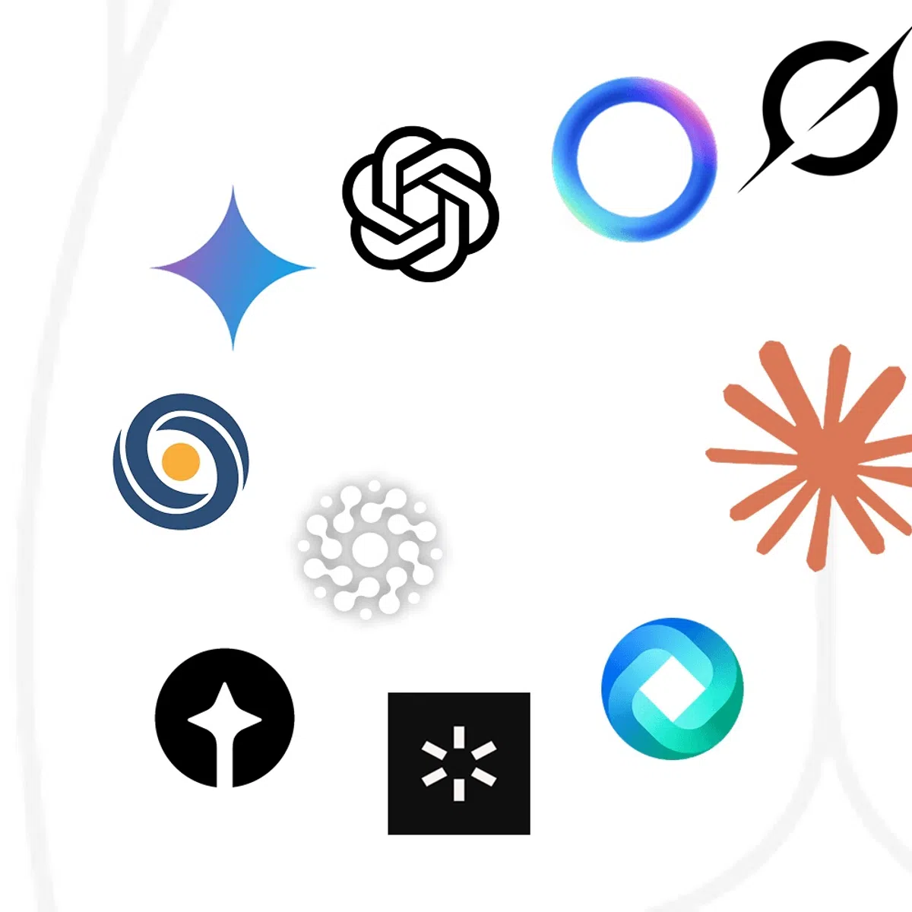
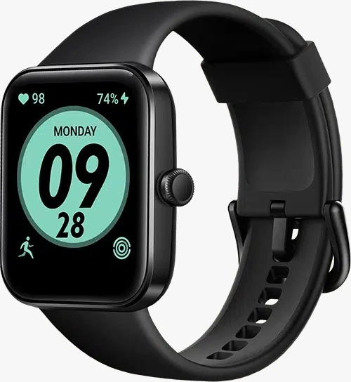
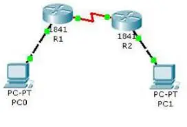
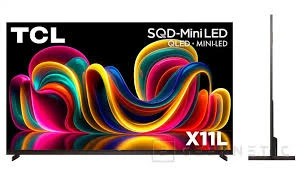

Lo mas nuevo en tecnologia
Descubre los avances e innovaciones que estan cambiando el mundo

IA Generativa: ChatGPT, Gemini y Copilot
Los modelos de lenguaje como GPT-4o, Google Gemini y Microsoft Copilot estan revolucionando la forma en que trabajamos, creamos contenido y aprendemos. Ahora la IA puede generar texto, imagenes, codigo y hasta videos en segundos.

Apple Vision Pro y Meta Quest 3
Los visores de realidad mixta combinan el mundo real con elementos virtuales. Apple Vision Pro ofrece la experiencia mas inmersiva del mercado, mientras que Meta Quest 3 la hace accesible para todos.

5G y los primeros pasos hacia el 6G
La red 5G ya esta disponible en muchas ciudades con velocidades de hasta 10 Gbps. Mientras tanto, investigadores ya trabajan en el 6G que promete internet con latencia cero y conexion masiva de dispositivos IoT.
Robots humanoides y automatizacion
Empresas como Tesla (Optimus), Boston Dynamics y Figure estan creando robots humanoides capaces de caminar, manipular objetos y trabajar en fabricas. La automatizacion avanza rapido en la industria y los hogares.

El quantum computing se acerca a la realidad
Google, IBM y Microsoft estan logrando avances clave en qubits estables. La computacion cuantica podra resolver en segundos problemas que hoy tardarian miles de anos en farmacos, clima y criptografia.

Baterias solidas y fusion nuclear
Las baterias solidas prometen celulares que cargan en 5 minutos y carros electricos con 1000 km de autonomia. Mientras tanto, empresas como Commonwealth Fusion estan cerca de lograr energia de fusion limpia e inagotable.
Carros sin chofer: Waymo, Tesla y mas
Waymo ya opera taxis autonomos en varias ciudades de EE.UU. Tesla esta desarrollando su robotaxi. Los vehiculos autonomos estan transformando el transporte, la logistica y la movilidad urbana.

IA contra IA: la nueva guerra digital
Los atacantes usan IA para crear phishing hiperrealista y deepfakes. Defensivamente, la ciberseguridad ahora usa IA para detectar amenazas en tiempo real. La post-cuantica se vuelve urgente ante la computacion cuantica.